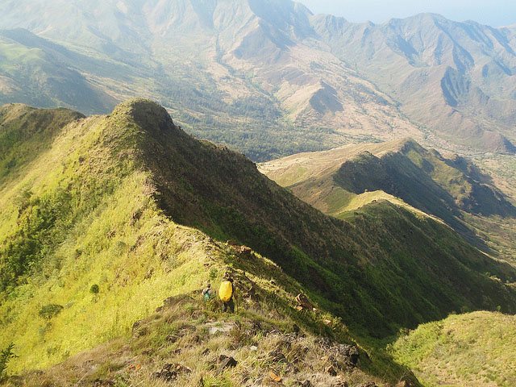
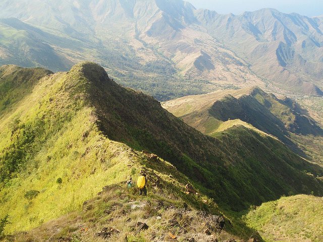
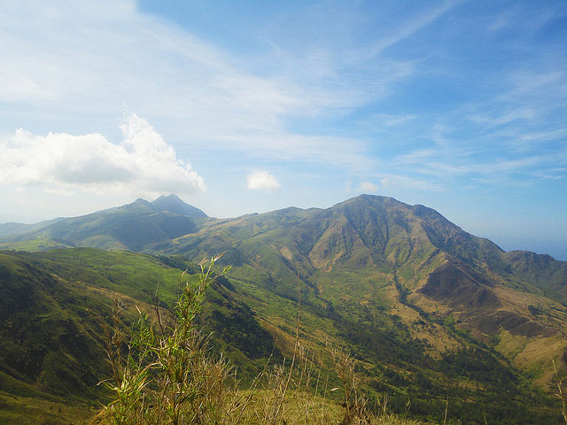
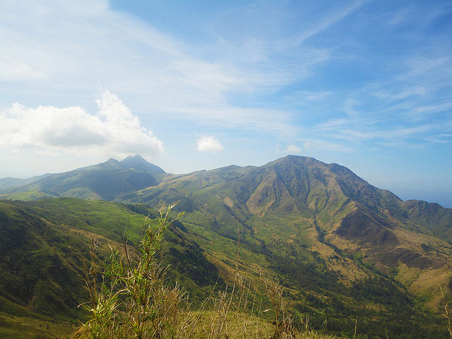

Back
Mount Balingkilat
You can swipe the images


 


 



Jump Off: Sito Cawag, Subic, Zambales 2209
Information:
If you want to request a visit at Mt. Balingkilat, Please contact the Subic Police Department: (047) 232-2600
 |
|---|